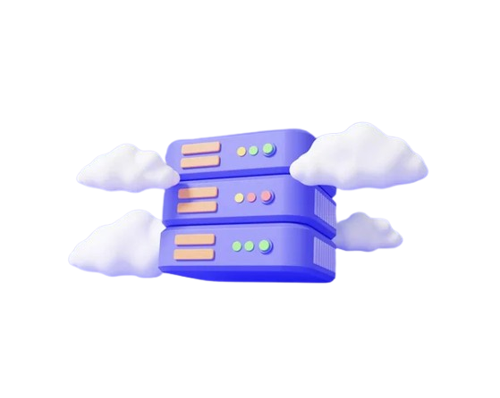
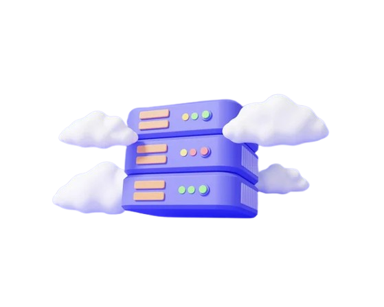

Almacenamiento de datos y aplicaciones en máquinas físicas ubicadas en centro de datos remotos, con el internet sirviendo como el conector instantaneo entre proveedores de servicios y usuarios.
Los servicios en la nube son recursos TI administrados por organizaciones encargadas, que se se entragan bajo demanda a tráves de internet. Las organizaciones deben adquirir y configurar todo, desde el hardware de servidores y sistemas de almacenamiento hasta las tecnologias de redes y seguridad, antes de lanzar cualquier sistema digital. El aprovisionamiento y la administracion de la infraestructura de TI representa un desafio costoso y complejo, ademas de restar en cierta parte a la innovacion. Los servicios en la nube permoten a cualquier persona acceder a la infraestructura de TI necesaria para crear y mantener sistemas digitales, al abstraer infraestructuras complejas de forma que todos puedan desarrollar aplicaciones o distintas tareas con rápidez y a escala global. Ejecutar sus aplicaciones en un servidor en la nube es solo el comienzo.
 

La computacion se fundamenta en un conjunto de principios:
Como se han mencionado, los servicios son infraestructuras, plataformas o sistemas de software que proveedores externos alojan y ponen a disposicion de los usuarios a tráves de internet. Facilitan el flujo de datos de los usuarios a tráves de internet, desde los clientes Frontend hasta los sistemas de proveedores, y viceversa. Ademas, fomentan el diseño de aplicaciones en la nube y la flexibilidad de trabajar con ella. Paara acceder a estos servicios, los usuarios solo necesitan una computadora, un sistema operativo y conexión a internet.